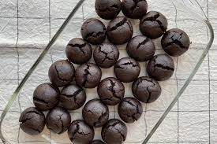

Kakaolu Islak Kurabiye
Çikolata ve şerbetin birleşimiyle lezziz, hafif ve atıştırmalık kurabiyeler yapmaya hazır mısınız? İşte tarif:

Kaç Kişilik:4-6 kişilik
Hazırma Süresi:15 dakika
Pişirme Süresi:30 dakika
Tarif: Zülal ATEŞ
MALZEMELER
Şerbeti için;
- 2 çay bardağı şeker
- 2 çay bardağı su
Hamuru için;
- 1 adet yumurta
- 1 çay bardağı şeker
- 125g oda sıcaklığında tereyağı
- 1 çay bardağı sıvı yağ
- 4 yemek kaşığı kakao
- 1 paket vanilya
- 1 paket kabartma tozu
- 3 su bardağı un
Kakaolu Islak Kurabiye Nasıl Yapılır?
- İlk olarak kurabiyemizin şerbetini hazırlayalım. Bunun için tenceremize şeker ve suyu alarak karıştırarak kaynamaya bırakalım.
- Kaynadıktan 5-6 dakika sonra ocaktan alalım, soğuması için farklı bir kaba aktaralım.
- Şerbetimiz soğurken bizde bu sırada hamurumuzu hazırlayalım. Yoğurma kabına yumurtayı alarak mikserle çırpalım.
- Üzerine şekeri ve tereyağını ekleyerek çırpmaya devam edelim.
- Sıvı yağ, elenmiş kakao, vanilya, kabartma tozu ve unun birazını ilave ederek hamurumuzu yoğurmaya başlayalım.
- Kıvam alan hamurdan ceviz büyüklüğünde parçalar alalım ve elimizle yuvarlayarak şekil verelim.
- Şekil verdiğimiz kurabiyelerimizi önceden ısıttığımız 170°C fırında yaklaşık 30 dakika pişmeye bırakalım.
- Fırından aldığımız kurabiyeleri soğuyan şerbetin içerisine alalım, şerbetin içerisinde 2-3 saniye kadar beklettikten sonra servis tabağına alalım.
- Kurabiyelerimizi dilediğimiz gibi süsleyerek servis edelim. Ben toz fıstık ve Hindistan cevizi kullanmayı tercih ettim. Bu ölçülerle yaptığımda toplamda 34 adet kurabiye elde ettim.